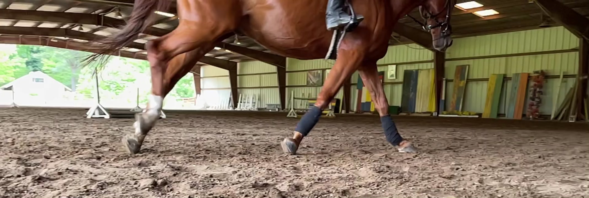

A state of equilibrium.
Nature minimizes mechanical leverage in the equine limb. Our shoes replicate the equilibrium found in the natural state.

See it on a real hoof.
Riley shows how a CRS shoe helps resolve diagonal pressure in the hoof.
See the shoesTraditional shoes confine the foot.
Traditional shoes serve a short-term purpose of maximizing work output from a horse, but fail to support the biomechanics and long-term reliability of the hoof structure.
Traditional shoes confine the foot to one medial/lateral plane. The patented CRS Horseshoe is a composite shoe that provides M/L self-adjustment.

“Nature provides a wide variety of planes and angles.”
A steel shoe imposes one idea of level. Watch Riley show what the foot does when it gets to choose.
 0:59
0:59
Let the limb find its own balance.
By reducing peripheral leverage, CRS Horseshoes allow the limb to adopt its most efficient state — a state of equilibrium.
Many lameness cases — navicular, ringbone, soft tissue injuries, white line disease, coffin bone fractures — have a medial/lateral component that can’t be addressed with a flat shoe. That accounts for the hopeless outlook for many lameness cases. Venogram studies show that hoof / pastern alignment is key to supporting blood perfusion. Equilibrium in the limb is a precondition to improved comfort.
Conditions with a medial/lateral component
- Navicular syndrome
- Ringbone
- Soft tissue injuries
- White line disease
- Coffin bone issues
- Thin soles
Bowker — Hoof Care & Lameness (2006): peripheral loading and the living foot
The research Riley links on the current site. Needed from CRS: the Epona “To Flex or not to Flex” paper
Read the paper (PDF) →What veterinarians say.
“I frequently use CRS Horseshoes on complicated lameness cases. They give me the ability to solve a wide range of problems with one shoe.”Dr. Ben Hufnagle, DVM
Veterinarian
“CRS Horseshoes has emerged as an industry leading option for all types of lameness cases.”Dr. Dan Walker, DVM
Veterinarian
Think this fits your horse?
Find the line built for the condition you’re dealing with, or send Riley the details. Complex case? A Metron hoof analysis gives measurement-grade answers for $95.